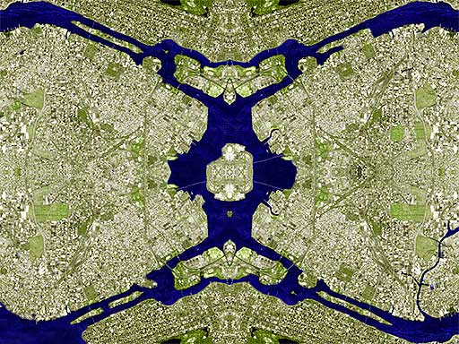

Schefferville
Schefferville. Pour tout citoyen de l'empire cette ville prestigieuse évoque non seulement la splendeur de l'empire mais elle symbolise l'apogée de la civilisation grâce à son architecture jamais égalée. Ces quelques pages vous proposent une visite des monuments qui ont fait de Scheferville le centre de l'univers, l'endroit où la beauté architecturale transcende le simple mortel.

Schefferville vue par satellite